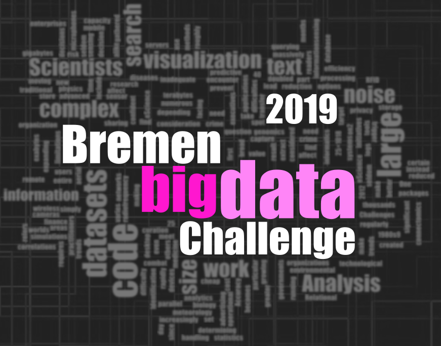

Home
Academics
Art
Family Tree
简体中文
Links
| Homepage@UniversitätBremen | English Deutsch |
| ORCID | 0000-0002-6850-9570 |
| Google Scholar | Link |
| ResearchGate | Link |
Research Aspects
|
BioMedical Engineering (BME)
Big data modeling and analysis Machine Learning (ML) and Artificial Intelligence (AI) Digital Signal Procdssing (DSP) of sensor signals Big data acquisition, automatic segmentation, annotation, and data sharing Feature extraction, feature selection, and feature space reduction Wearable sensors Body Sensor Network (BSN) Pervasive computing Rehabilitation assistance, including arthritis and knee bandage Human activity modeling and Human Activity Recognition (HAR) Real-time processing and recognition system Multimodal (multisensorial) and multichannel biosignal processing Inertial sensors, inluding accelerometers and gyroscopes Electromyography (EMG), electrogoniomters and other biosignals Biosignals and user interfaces Wearable computing in musical performance |
Developed the first intelligent knee bandage recognizing human activities in real-time to assist rehabilitation |

 Best Paper Award (student author) Best Paper Award (student author)
|
Professional Preparation
| 2001 — 2004 | Senior High School |  |
Shanghai Shixi High School |
1st Prize of the National Olympiad in Informatics in Provinces (NOIP'94) [Certificate No. I030473]
1st Prize of Shanghai High School Programming Competition (CASIO Cup) |
| 2004 — 2007 | Bachelor |  |
Shanghai Jiao Tong University
School of Electronic Information and Electrical Engineering Major: Communication Engineering |
Scholarship of Shanghai Jiao Tong University (three years) |
| 2007 — 2009 | Diplom Ingenieur |  |
Technische Universität Berlin
Electrical Engineering and Computer Science (Faculty IV) Major: Communication Systems Major: Quality and Usability Supplementary major: Computer Vision |
Average course score: 1.0
Student research assistant,  Fraunhofer Institute for Telecommunication, Heinrich Hertz Institute, HHI Fraunhofer Institute for Telecommunication, Heinrich Hertz Institute, HHI
|
| 2009 — 2011 | Master of Science | |
Shanghai Jiao Tong University
School of Electronic Information and Electrical Engineering Major: Communication and Information System |
GPA：3.16/3.3
Ranking：1/106 First-class scholarship of Shanghai Jiao Tong University |
| 2012 — 2013 | Research Assistant | | Technische Universität Berlin | The Rector's Scholarship, Technische Universität Berlin |
| 2014 — 2015 | Software Enginnering |  | In industry | |
| 2016 — 2021 | PhD Candidate and Research Assistant |  |
Universität Bremen
Mathematics and Computer Science (Faculty 3) Cognitive Systems Lab (CSL) |
In charge of the BMWi project Arthrokinemat
Developed the first intelligent knee bandage recognizing human activities in real-time to assist rehabilitation Best Paper Award (student author)
Established extensive and close research cooperation with Institute of Sports and Sports Science (IfSS,  Bauerfeind AG, among others Bauerfeind AG, among others
Obtained a PhD of Engineering in 2021 |
| From 2021 | Postdoctoral Researcher | | Cognitive Systems Lab, Universität Bremen |
Academic Events
| 2018 | Lisbon, Portugal |
 |
Universidade Nova de Lisboa | |
| 2018 | Düsseldorf, Germany |
 |
Verein der CDHAW-Absolventen und Mitglieder der Tongji-Universität(CAMT) | Academic Talk: Academics and Art |
| 2019 | Prague, Czech |
|
12th International Joint Conference on Biomedical Engineering Systems and Technologies (BIOSTEC 2019) | Tutorial: From Offline towards Real-Time: A Wearable HAR System Using Biosensors Integrated into a Knee Bandage |
| 2019 | North Germany |
 |
4th Bremen Big Data Challenge (BBDC 2019) | (Individually) big data acquisition, processing, and provision. More than 60 teams from dozens of universities in North Germany participated in the final round. |
| 2019 | Bremen, Germany |
 |
BREMEN.AI @ |
Demonstration of real-time human activity recognition and MR game platform |
| 2021 | Brmeen, Germany |
 |
MindDay @ |
Demonstration of intelligent knee bandage |
Teaching Experience
| 2017 — 2021 | Universität Bremen | Biosignals and User Interfaces | Course organization, part of teaching tasks, exercise courses, Q&A, exam proposition, oral exam committees, online teaching activities in the pandemic, among others. |
| 2020 — 2021 | Universität Bremen | Machine Learning Basics | Cooperative teaching, responsible for clustering analysis and clustering algorithm; online lecture video preparation in the pandemic |
| 2020 — 2021 | Universität Bremen | Bachelor Project: RoboARinth | Instructing project practice |
| 2016 — 2018 | Universität Bremen | Software Proejct II | Advising software design, instructing group practice |
| 2010 — 2011 | shanghai Jiao Tong Univeristy | Basic Circuit Theory | Teaching Assistant |
Publications
Interpretable High-Level Features for Human Activity Recognition. Hartmann, Y., Liu, H., Lahrberg, S., & Schultz, T. (2022). In BIOSIGNALS 2022. INSTICC, SciTePress.Forthcoming
Motion Units: Generalized Sequence Modeling of Human Activities for Sensor-Based Activity Recognition. Liu, H., Hartmann, Y., & Schultz, T. (2021). In EUSIPCO 2021 — 29th European Signal Processing Conference. IEEE.
IEEE Google Scholar ResearchGate Uni Bremen
CSL-SHARE: A Multimodal Wearable Sensor-Based Human Activity Dataset. Liu, H., Hartmann, Y., & Schultz, T. (2021). Front. Comput. Sci. 3: 759136.
Dataset Frontiers Google Scholar ResearchGate Uni Bremen
Hidden Markov Model and Its Application in Human Activity Recognition and Fall Detection: A Review. Xue, T., & Liu, H. (2021). In CSPS 2021 — 10th International Conference on Communications, Signal Processing, and Systems. Springer.
Springer Google Scholar ResearchGate
Feature space reduction forhuman activity recognition based on multi-channel biosignals. Hartmann, Y., Liu, H., and Schultz, T. (2021). In Proceedings of the 14th International Joint Conference on Biomedical Engineering Systems and Technologies — Volume 4: BIOSIGNALS, pages 215-222. INSTICC, SciTePress.
Google Scholar SciTePress ResearchGate Uni Bremen
TSFEL: Time series featureextraction library. Barandas, M., Folgado, D., Fernandes, L., Santos, S., Abreu, M., Bota, P.,Liu, H., Schultz, T., and Gamboa, H. (2020). SoftwareX, 11:100456. Elsevier.
Open Source Repository Documentation SoftwareX (ScienceDirect) Google Scholar ResearchGate Uni Bremen
Feature space reduction for mul-timodal human activity recognition. Hartmann, Y., Liu, H., and Schultz, T. (2020). In Proceedings of the 13th International Joint Conference on Biomedical Engineering Systems and Technologies — Volume 4: BIOSIGNALS, pages 135–140. INSTICC, SciTePress.
Google Scholar SciTePress ResearchGate Uni Bremen
A Wearable Real-time Human Activity Recognition System using Biosensors Integrated into a Knee Bandage. Liu, H., & Schultz, T. (2019). In Proceedings of the 12th International Joint Conference on Biomedical Engineering Systems and Technologies — Volume 1: BIODEVICES, pages 47–55. INSTICC, SciTePress. (Best Paper, Student Author).
Google Scholar SciTePress ResearchGate Uni Bremen
ASK: A Framework for Data Acquisition and Activity Recognition. Liu, H., & Schultz, T. (2018). In Proceedings of the 11th International Joint Conference on Biomedical Engineering Systems and Technologies — Volume 3: BIOSIGNALS, pages 262–268. INSTICC, SciTePress.
Google Scholar SciTePress ResearchGate Uni Bremen
Bremen Big Data Challenge 2017: Predicting University Cafeteria Load. Weiner, J., Diener, L., Stelter, S., Externest, E., Kühl, S., Herff, C., Putze, F., Schulze, T., Salous, M., Liu, H., Küster, D., and Schultz, T. (2017). In Proceedings of the 40th Annual German Conference on AI, Dortmund, Germany (KI 2017). Springer International Publishing.
BBDC 2017 Springer Google Scholar ResearchGate Uni Bremen
Capacity of Cooperative Ad Hoc Networks with Heterogeneous Traffic Patterns. Liu, H., & Wang, X. (2011). In ICC 2011 — IEEE InternationalConference on Communications, pages 1–5. IEEE.
IEEE Google Scholar ResearchGate